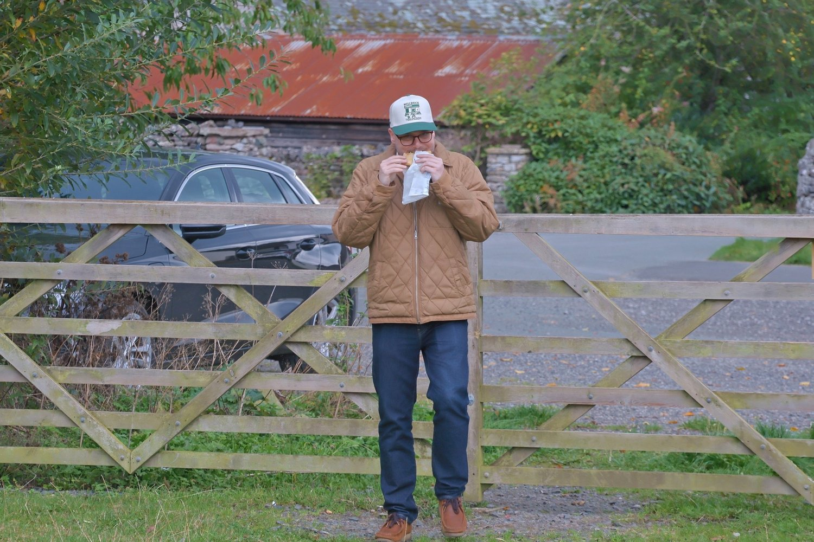
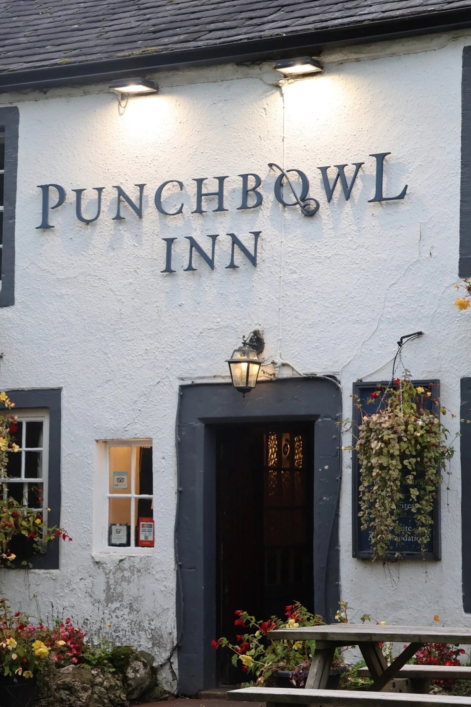
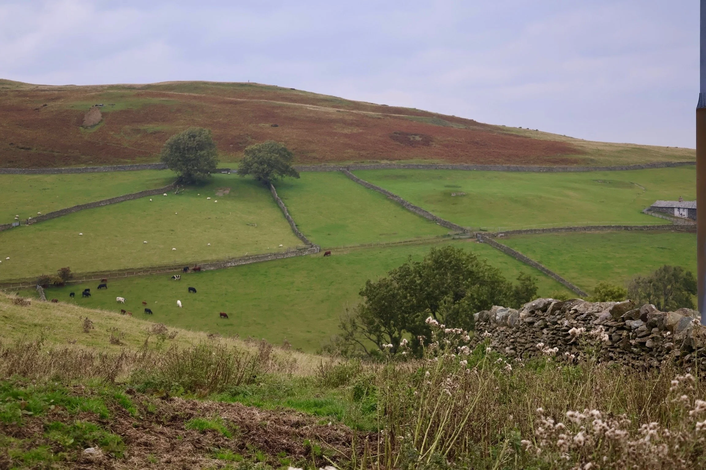
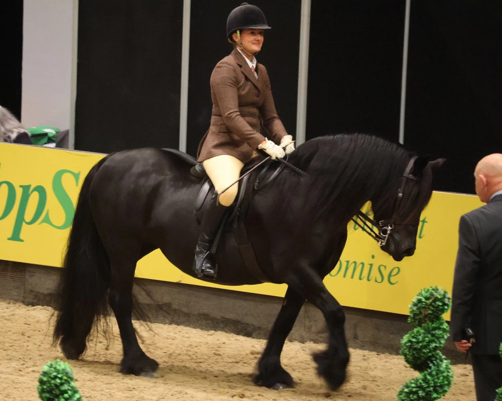

My Search for the Fell Pony
My First Steps Abroad
When I first arrived in Manchester, I knew exactly what I wanted to find: the Fell Pony. I had read about them as a child, paging through old breed books, and once I realised their home in Cumbria was only a few hours north, it became the obvious first expedition.
So I packed the camera, strapped my daughter into the back seat, and set out with my friend and fixer, Nate. We drove north out of the city, past motorways and stone villages, toward a landscape where the hills roll on and the wind has teeth.

The Road North
At first, the drive felt promising. Then it went quiet. No horses in paddocks. No obvious stables. Just sheep, and then more sheep. I began to wonder if I had misunderstood the map and the myths.
We stopped in a small town while Nate ducked into a local pub to ask around. A few people looked amused that we had travelled this far to find a pony, but one man eventually pointed us toward the hills beyond the next village.

Into the Hills
We followed his directions and left the main road. Tarmac became gravel, gravel became dirt, and the country opened into bare, windswept ground. It felt exactly like the kind of place where a native pony could vanish into weather and distance.
I started to feel the first sting of disappointment when Nate leaned forward and pointed to a ridge. Dark shapes moved in the distance. I guessed cows. He was not convinced. We pushed our little hatchback as far as it would go and then continued on foot.

The Moment
I stayed back by the car at first while Nate went over the rise to check. He came back grinning and said, "You might want to go have a look." I climbed the hill and there they were: four or five dark shapes grazing against the wind, long manes rough and tangled, coats built for the cold. Fell Ponies, unmistakably.
I moved closer with the camera and heard my daughter behind me shouting, "Wait for me, Dad!" The ponies lifted their heads, alert, and then drifted away as quietly as they had appeared. I got only long-distance shots, but they were enough. Proof, at last.

A Small Victory
It was not the perfect wildlife encounter. The light was flat, and none of the photos were close. But it was real. From Melbourne to Manchester, from city streets to Cumbrian high ground, I had found the Fell Pony in its own element: weathered, practical, and free.
Lesson learned: bring the longer lens, do not forget the child in the car, and keep going when the search feels hopeless. Sometimes one good local tip and one stubborn friend are all you need to clear the final ridge.

The Redemption
A few weeks later, I got my second chance at the Horse of the Year Show in Birmingham. There were Fell Ponies again, this time close enough to study every detail: brushed manes, shining coats, perfect turnout.
Seeing them polished in the ring after chasing them in the hills was strange and satisfying at once. Different setting, same shape, same presence, same quiet toughness.
"Sometimes the best horse stories are not the perfect shots, but the miles you travel to earn even a glimpse."
Related Stories

The Horses of the Camargue
A semi-feral breed shaped by wetlands, work, and tradition in southern France.

The Australian Stock Horse: Built for the Bush
Another practical working breed forged by tough terrain and long days in the saddle.

Old Billy the Barge Horse: The Long Life of a Working Legend
A British working-horse story from another era of endurance, labour, and partnership.